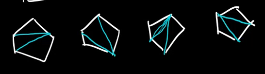
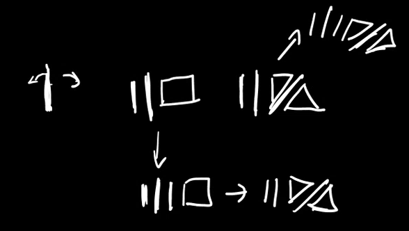

1. Przykładowe triangulacje (n+2)–kąta
- 2-kąt możemy podzielić na 0 sposobów:
∣
- 3-kąt możemy podzielić na 1 sposób:
△
- 4-kąt możemy podzielić na 2 sposoby:
□ + odbicie
- 5–kąt możemy podzielić na 5 sposobów:

(Liczby Catalana)
2. Klasa kombinatoryczna
T≅E+T×Z×T
(E odpowiada 2-kątowi, kiedy Z odpowiada trójkątowi)
Rozumujemy to jako jeden trójkąt, który może mieć po dwóch stronach pewne wielokąty do triangulacji. Ten trójkąt dzieli dwa wielokąty do podziału.
2.1. Definicja kinda rekurencyjna
Mamy podstawowy 2-kąt: ∣ który ma 0 triangulacji oraz podstawowy trójkąt △, który ma tylko 1 triangulację.
Przykładowo dla 4-kąta:

3. OGF
- T(z)=1+z⋅(T(z))2
- T(z)=∑n=0∞n+11(n2n)⋅zn